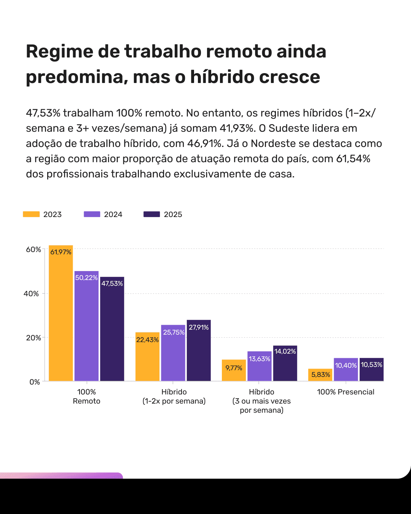

Tendências do Mercado de Produto 2025-2026
Descubra os dados e tendências do Mercado de Produto brasileiro
- Inteligência Artificial se torna prioridade absoluta de aprendizado
- Regime de trabalho remoto ainda predomina, mas o híbrido cresce
- Heads e líderes priorizam IA e liderança, mas dão menos foco a dados
